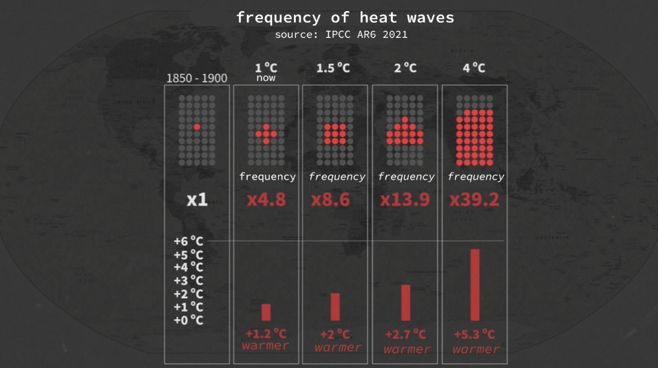
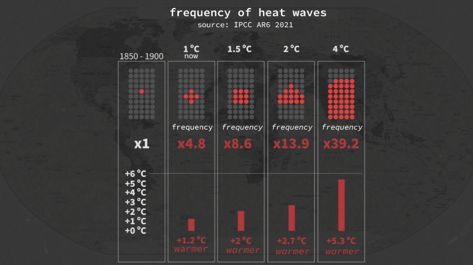

Important questions in researches
In 2021, a report was released, asking questions like: How much time do we
have left? In which stage we are now? To
begin with, we need to understand what to compare (the strating point) and what global warming actually
is. Global
warming is the increase in temperature across the ENTIRE planet Earth. Scientists of the world agreed to
use the
beginning of the industrial era (1850-1900) as the starting point.
Stable warming of the Earth began in 1950, and now, only 70 years later, the Earth has warmed in 1.1°.
On the graph,
it's clear that we didnt had such a rapid warming in thousands of years. Many "armchair experts" might
wonder how such a
small individual can make more CO2 than some huge HUGE volcano. However, scientists in their researchers
that humans are
responsible for the temperature increase. Due to climate change, we can feel such an experience like
heatwaves in
Israel. Enormous wildfires also occur in the world. For example, the well-known wildfires in Canada,
United States and
Turkey. Heatwaves are even recorded as a cause of death.


 

how often these heatwaves will appear.
The UN research also raised the question of how often these heatwaves will appear. They took the
heatwaves of the last
50 years as the data base. If in the past, there was 1 heatwave every 50 years, now the number has
reached 5, and the
temperature of these extreme weather has also risen. If the Earth's temperature continues to rise,
heatwaves will become
more dangerous. For instance, if the Earth warms rise in 4 degrees, heatwaves will occur 40 times more
often, resulting
in a hellish situation on Earth. In addition to heatwaves, the increasing temperature of the Earth leads
to more
dangerous droughts and floods. But the most important question is: How much time do we have left? This
"how much"
depends not on time but on carbon dioxide emissions, in other words, CO2. In the last 200 years, humans
have been
responsible for releasing over 2.2 trillion tons of CO2 into the atmosphere. Our next "milestone" is
1.5°. At this
stage, scientists introduce the concept of a "carbon budget," and based on it, we have about 400 billion
tons left. At
our current production pace, we have around 10 years left to adapt to new climate conditions. The graph
shows forecasts
for the increase in Earth's temperature, ranging from super optimistic to maximally pessimistic. The
blue graph
represents the most optimistic scenario if the entire world unites to "address this common problem".
It's evident that
we will see a decline by 2030, but we will still reach 1.5° by 2100. The worst-case scenario is depicted
in the red
graph. If we continue as now and before, we will heat the Earth by more than 4°. As I said before, this
would be hellish
on the Earth
234
scientists
64
Countries
400b tonn
carbon budget
What we have in conclusion.
Using nuclear energy will help reduce CO2 emissions from burning fossil fuels like coal in power
plants. Nuclear energy
is currently a safe choice. In Russia, 11 nuclear plants make 20% of their energy. We should consider
this option more.